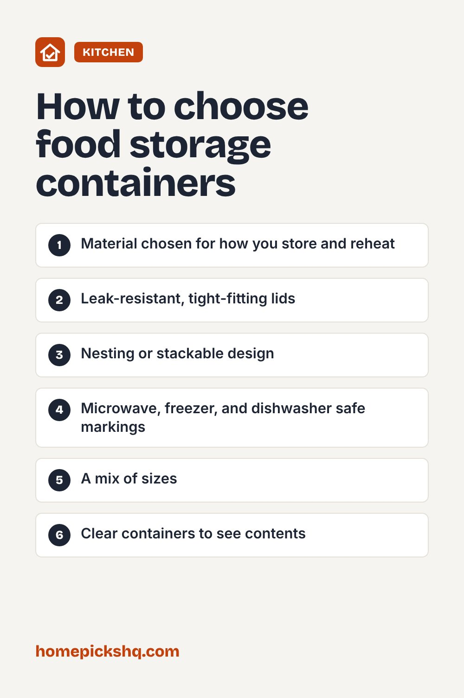

Best Food Storage Containers: Glass vs Plastic and More

How we write these guides: we research manufacturer specifications, expert guidance, and owner feedback. We do not claim to have lab-tested every product. If product links are added, some may be affiliate links; see our disclosure.
Good food storage reduces waste and makes meal prep easier. The right containers keep food fresher, stack neatly, and survive the microwave and dishwasher. Here is how to choose between the main materials and lid styles.
Glass containers
Glass does not stain or absorb odors, and it is generally safe in the oven, microwave, and dishwasher if the lid allows. Borosilicate and tempered glass handle temperature changes well, but any glass can crack from sudden shocks, so do not move a container straight from the freezer to a hot oven. Glass is heavier than plastic.
Plastic containers
Plastic is light, inexpensive, and hard to break. Look for BPA-free containers and polypropylene (recycling code 5), which is commonly used for microwave-safe food containers. Tomato sauce and curry can stain plastic over time.
Stainless steel
Stainless steel is durable and stain resistant, and it is great for lunches and storing in the fridge. It cannot go in the microwave, and you cannot see what is inside.
Lids and seals
Snap-lock lids with silicone gaskets create a tight seal for soups and sauces. Simple press-on lids work for dry foods. Make sure lids stack or nest with the containers so they do not become a pile of mismatched parts.
Freezer and microwave tips
Leave about an inch of space at the top when freezing liquids because they expand. Vent the lid when microwaving so steam can escape. Label and date containers so older food gets used first.
Quick buying checklist
- Material chosen for how you store and reheat
- Leak-resistant, tight-fitting lids
- Nesting or stackable design
- Microwave, freezer, and dishwasher safe markings
- A mix of sizes
- Clear containers to see contents

Frequently asked questions
Is glass safer than plastic?
Both can be safe when used as directed. Glass does not stain or hold odors, and plastic is lighter.
Can I put hot food straight into containers?
Let it cool slightly first, then refrigerate within two hours to keep it safe.
How long do leftovers last?
Most cooked leftovers keep three to four days in the refrigerator.